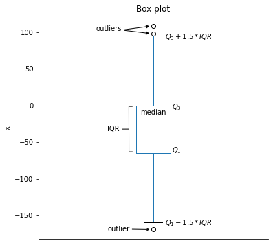

Diagramas
Contents
import numpy as np
import pandas as pd
from scipy.stats import trim_mean
import matplotlib.pyplot as plt
import seaborn as sns
Diagramas#
En la estadistica es muy común el uso de representaciones visuales para mostrar el comportamiendo de los datos, las cuales seran mostradas a continuación.
Histograma#
Definición
Un histograma es una representación gráfica de una variable en forma de barras en la cual, la superficie de la barra es proporsional a la frecuencia de los valores representados. Son utiles por que sirven para obtener un panorama general de la forma como se distribuyen los datos.
La construcción de un histograms depende del tipo de datos que se esten empleando (discretos o continuos) tal y como de describe a continuación.
Histograma a partir de datos discretos#
En primer lugar, se determinan la frecuencia y la frecuencia relativa de cada valor \(x_i\). Luego se marcan los valores \(x_i\) posibles en una escala horizontal. Sobre cada valor se traza un rectángulo cuya altura es la frecuencia relativa (o alternativamente, la frecuencia) de dicho valor: Los rectángulos deben medir lo mismo de ancho.
Ejemplo 1#
¿Qué tan inusual es un juego de beisbol sin hit o de un hit en las ligas mayores y cuán frecuentemente un equipo pega más de 10, 15 o incluso 20 hits? La siguiente tabla muestra el numero de hits conectados por equipo y por juego de todos los juegos de nueve episodios que se jugaron entre 1989 y 1993. (Nota: Este ejemplo fue tomado del libro Probabilidad y estadistica para Ciencias e Ingenieria (Jay L. Devore)).
Hits/juego |
Numero de juegos |
|---|---|
0 |
20 |
1 |
72 |
2 |
209 |
3 |
527 |
4 |
1048 |
5 |
1457 |
6 |
1988 |
7 |
2256 |
8 |
2403 |
9 |
2256 |
10 |
1967 |
11 |
1509 |
12 |
1230 |
13 |
834 |
14 |
569 |
15 |
393 |
16 |
253 |
17 |
171 |
18 |
97 |
19 |
53 |
20 |
31 |
21 |
19 |
22 |
13 |
23 |
5 |
24 |
1 |
25 |
0 |
26 |
1 |
27 |
1 |
Se pide:
Defina el DataFrame asociado a la tabla
Calcule la frecuencia relativa.
Dibuje el histograma.
# 1
raw_data = {"hits_per_game":np.arange(28),
"games": [20, 72, 209, 527, 1048, 1457, 1988, 2256, 2403,
2256, 1967, 1509, 1230, 834, 569, 393, 253, 171,
97, 53, 31, 19, 13, 5, 1, 0, 1, 1]
}
df = pd.DataFrame(raw_data, columns = raw_data.keys())
df.head()
| hits_per_game | games | |
|---|---|---|
| 0 | 0 | 20 |
| 1 | 1 | 72 |
| 2 | 2 | 209 |
| 3 | 3 | 527 |
| 4 | 4 | 1048 |
# 2
df_freq = df.copy()
df_freq['freq_rel']= df['games']/df['games'].sum()
df_freq.head()
| hits_per_game | games | freq_rel | |
|---|---|---|---|
| 0 | 0 | 20 | 0.001032 |
| 1 | 1 | 72 | 0.003715 |
| 2 | 2 | 209 | 0.010783 |
| 3 | 3 | 527 | 0.027189 |
| 4 | 4 | 1048 | 0.054068 |
print("Catidad total de juegos", df_freq['games'].sum())
print("Suma de las frecuencias", df_freq['freq_rel'].sum())
Catidad total de juegos 19383
Suma de las frecuencias 1.0
# Ya se han contado los elementos (se uso pandas para el histograma)
df_freq['freq_rel'].plot(kind='bar',
title ='Histograma del número de hits por juego de nueve entradas',
xlabel="Hits/Juego",
ylabel="Frecuencia relativa");
Histograma a partir de datos continuos#
En este caso, se divide el eje de medición entre un número adecuado de intervalos de clase o clases (bins). Cuando el ancho de las clases es el mismo, lo que se hace es determinar la frecuencia y la frecuencia relativa de cada clase contando la cantidad de muestras que se encuentran dentro de cada intervalo y usando frecuencia relativa como la altura del correspondiente intervalo.
Ejemplo 2#
Los siguientes datos muestran la cantidad de horas dedicadas a jugar juegos de video de un grupo de estudiantes.
9.95 10 2.25 16.75 0
19.5 22.5 7.5 15 12.75
5.5 11 10 20.75 17.5
23 21.9 24 23.75 18
20 15 22.9 18.8 20.5
Construya un histograma agrupando los datos en cinco clases.
Grafica empleando Matplotlib#
# --- Usando Numpy ---
# Creacion de la tabla
data = np.array([9.95, 10, 2.25, 16.75, 0, 19.5, 22.5, 7.5, 15, 12.75,
5.5, 11, 10, 20.75, 17.5, 23, 21.9, 24, 23.75, 18,
20, 15, 22.9, 18.8, 20.5])
data
array([ 9.95, 10. , 2.25, 16.75, 0. , 19.5 , 22.5 , 7.5 , 15. ,
12.75, 5.5 , 11. , 10. , 20.75, 17.5 , 23. , 21.9 , 24. ,
23.75, 18. , 20. , 15. , 22.9 , 18.8 , 20.5 ])
# Histograma de cinco grupos
plt.style.use('classic')
hist = np.histogram(data, bins=5)
hist
(array([ 2, 2, 5, 6, 10], dtype=int64),
array([ 0. , 4.8, 9.6, 14.4, 19.2, 24. ]))
# Grafica del histograma usando Matplotlib
fig, ax = plt.subplots()
ax.hist(data, bins=5,histtype='bar', rwidth=0.5)
ax.set_xlabel("Horas de juego");
ax.set_ylabel("Numero de estudiantes");
ax.set_title('Histograma');

Grafica empleando Pandas#
# Creacion del dataframe
data = np.array([9.95, 10, 2.25, 16.75, 0, 19.5, 22.5, 7.5, 15, 12.75,
5.5, 11, 10, 20.75, 17.5, 23, 21.9, 24, 23.75, 18,
20, 15, 22.9, 18.8, 20.5])
df = pd.DataFrame({'hours': data})
df.head()
| hours | |
|---|---|
| 0 | 9.95 |
| 1 | 10.00 |
| 2 | 2.25 |
| 3 | 16.75 |
| 4 | 0.00 |
hist = pd.cut(df['hours'], bins = 5).value_counts().sort_values(ascending=True)
hist
(-0.024, 4.8] 2
(4.8, 9.6] 2
(9.6, 14.4] 5
(14.4, 19.2] 6
(19.2, 24.0] 10
Name: hours, dtype: int64
plt.style.use('ggplot')
hist.plot(kind='bar',xlabel="Horas de juego", ylabel="Numero de estudiantes",title="Histograma");
Grafica empleando Seaborn#
plt.style.use('seaborn-darkgrid')
sns.histplot(df,
bins=5,
x="hours",
kde=True,
shrink=.5);
Ejemplo 3#
El artículo “Determination of Most Representative Subdivision” (J. of Energy Engr., 1993: 43-55) proporciona datos sobre varias características de subdivisiones que podrían utilizarse para decidir si se suministra energía eléctrica mediante líneas elevadas o por medio de líneas subterráneas. He aquí los valores de la variable x = longitud total de calles dentro de una subdivisión:
1280 5320 4390 2100 1240 3060 4770
1050 360 3330 3380 340 1000 960
1320 530 3350 540 3870 1250 2400
960 1120 2120 450 2250 2320 2400
3150 5700 5220 500 1850 2460 5850
2700 2730 1670 100 5770 3150 1890
510 240 396 1419 2109
Construya un histograma con los límites de clase, 0, 1000, 2000, 3000, 4000, 5000 y 6000.
Solución empleando Matplolib#
# Usando Numpy
# Creacion de la tabla
data = [1280, 5320, 4390, 2100, 1240, 3060, 4770, 1050, 360, 3330, 3380, 340, 1000, 960,
1320, 530, 3350, 540, 3870, 1250, 2400, 960, 1120, 2120, 450, 2250, 2320, 2400,
3150, 5700, 5220, 500, 1850, 2460, 5850, 2700, 2730, 1670, 100, 5770, 3150, 1890,
510, 240, 396, 1419, 2109]
print(data)
[1280, 5320, 4390, 2100, 1240, 3060, 4770, 1050, 360, 3330, 3380, 340, 1000, 960, 1320, 530, 3350, 540, 3870, 1250, 2400, 960, 1120, 2120, 450, 2250, 2320, 2400, 3150, 5700, 5220, 500, 1850, 2460, 5850, 2700, 2730, 1670, 100, 5770, 3150, 1890, 510, 240, 396, 1419, 2109]
hist = np.histogram(data, bins=6, range=(0,6000))
hist
(array([12, 11, 10, 7, 2, 5], dtype=int64),
array([ 0., 1000., 2000., 3000., 4000., 5000., 6000.]))
fig, ax = plt.subplots()
ax.hist(data, bins=6, range=(0,6000), rwidth = 0.5);
ax.set_xlabel("Longitud de las calles");
ax.set_ylabel("Numero de calles");
plt.title('Histograma');
#plt.title('Histograma de longitud total de calles dentro de una subdivisión')
#plt.grid(True)
#plt.hist(data, bins=6, range=(0,6000));
Solución empleando Pandas#
df = pd.DataFrame({'long_calles':[1280, 5320, 4390, 2100, 1240, 3060, 4770, 1050, 360, 3330, 3380, 340, 1000, 960,
1320, 530, 3350, 540, 3870, 1250, 2400, 960, 1120, 2120, 450, 2250, 2320, 2400,
3150, 5700, 5220, 500, 1850, 2460, 5850, 2700, 2730, 1670, 100, 5770, 3150, 1890,
510, 240, 396, 1419, 2109]})
df.head()
| long_calles | |
|---|---|
| 0 | 1280 |
| 1 | 5320 |
| 2 | 4390 |
| 3 | 2100 |
| 4 | 1240 |
clases = pd.IntervalIndex.from_tuples([(0, 1000), (1000, 2000) ,(2000, 3000), (3000, 4000), (4000, 5000), (5000, 6000)])
hist = pd.cut(df['long_calles'], bins = clases)
hist
0 (1000, 2000]
1 (5000, 6000]
2 (4000, 5000]
3 (2000, 3000]
4 (1000, 2000]
5 (3000, 4000]
6 (4000, 5000]
7 (1000, 2000]
8 (0, 1000]
9 (3000, 4000]
10 (3000, 4000]
11 (0, 1000]
12 (0, 1000]
13 (0, 1000]
14 (1000, 2000]
15 (0, 1000]
16 (3000, 4000]
17 (0, 1000]
18 (3000, 4000]
19 (1000, 2000]
20 (2000, 3000]
21 (0, 1000]
22 (1000, 2000]
23 (2000, 3000]
24 (0, 1000]
25 (2000, 3000]
26 (2000, 3000]
27 (2000, 3000]
28 (3000, 4000]
29 (5000, 6000]
30 (5000, 6000]
31 (0, 1000]
32 (1000, 2000]
33 (2000, 3000]
34 (5000, 6000]
35 (2000, 3000]
36 (2000, 3000]
37 (1000, 2000]
38 (0, 1000]
39 (5000, 6000]
40 (3000, 4000]
41 (1000, 2000]
42 (0, 1000]
43 (0, 1000]
44 (0, 1000]
45 (1000, 2000]
46 (2000, 3000]
Name: long_calles, dtype: category
Categories (6, interval[int64, right]): [(0, 1000] < (1000, 2000] < (2000, 3000] < (3000, 4000] < (4000, 5000] < (5000, 6000]]
freq_rel = hist.value_counts()
freq_rel
(0, 1000] 13
(1000, 2000] 10
(2000, 3000] 10
(3000, 4000] 7
(5000, 6000] 5
(4000, 5000] 2
Name: long_calles, dtype: int64
df_hist = pd.DataFrame({'longitudes' : ['[0, 1000]','(1000, 2000]','(2000, 3000]','(3000, 4000]','(4000, 5000]','(5000, 6000]'],
'freq_relativa': freq_rel})
df_hist
| longitudes | freq_relativa | |
|---|---|---|
| (0, 1000] | [0, 1000] | 13 |
| (1000, 2000] | (1000, 2000] | 10 |
| (2000, 3000] | (2000, 3000] | 10 |
| (3000, 4000] | (3000, 4000] | 7 |
| (5000, 6000] | (4000, 5000] | 5 |
| (4000, 5000] | (5000, 6000] | 2 |
df_hist.plot(kind='bar',
title ='Histograma de longitud total de calles dentro de una subdivisión',
x="longitudes");
Solución empleando Seaborn#
ax = sns.histplot(data,
bins=[0,1000,2000,3000,4000,5000,6000],
kde=True,
shrink=.8);
ax.set(xlabel='Longitudes');
Grafica de cajas y bigotes#
Definición
La grafica de cajas y bigotes se usa para describir varias de las características más prominentes de un conjunto de datos. Las cuales incluyen:
El centro
La dispersión
El grado y la naturaleza de cualquier alejamiento de la simetría
La identificación de las observaciones “atípicas” inusualmente alejadas del cuerpo principal de los datos.
En la grafica de caja muestra de manera grafica un resumen que describe los cinco estadisticos:
Quartile |
Statistic |
Percentile |
|
|---|---|---|---|
1. |
\(Q_0\) |
minimum |
\(0^{th}\) |
2. |
\(Q_1\) |
N/A |
\(25^{th}\) |
3. |
\(Q_2\) |
median |
\(50^{th}\) |
4. |
\(Q_3\) |
N/A |
\(75^{th}\) |
5. |
\(Q_4\) |
maximum |
\(100^{th}\) |
La caja tiene el limite inferior en el cuartil \(Q_1\) y el superior en el cuartil \(Q_3\). La mediana se encuentra en la linea que se encuentra dentro de la caja y los bigotes se extienden desde la caja hasta los extremos (minimo y maximo). Para mejorar la visualizacion, los puntos atipicos se muestran como los puntos que se encuentran por encima cuartil \(Q_3+1.5\times IRQ\) y abajo del cuartil \(Q_1-1.5\times IRQ\) tal y como se muestra en la siguiente figura:
